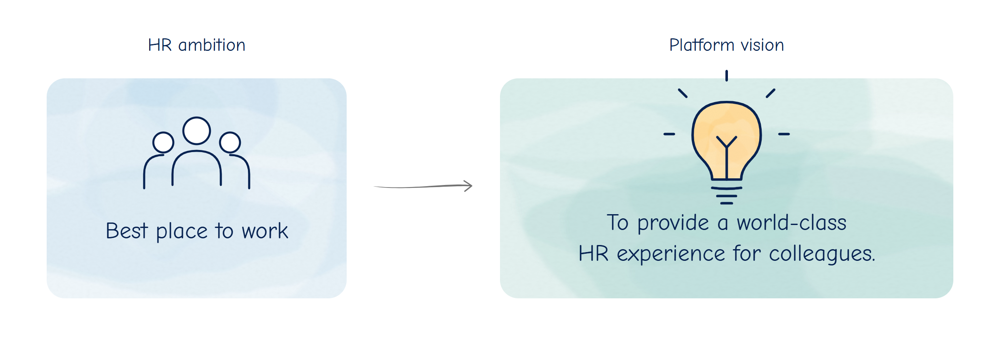
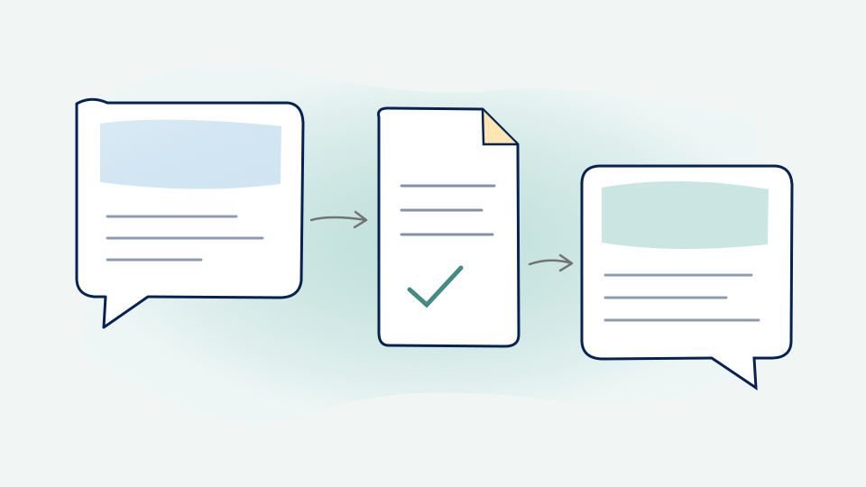

Transforming HR: Processes First, Channels Next
How I kept the familiar HR inbox while transforming the processes behind it, combining AI, deterministic logic and eight incremental releases.
Read article
How I kept the familiar HR inbox while transforming the processes behind it, combining AI, deterministic logic and eight incremental releases.
Read article
Keeping context when work moves between AI chats and agents.
Read article